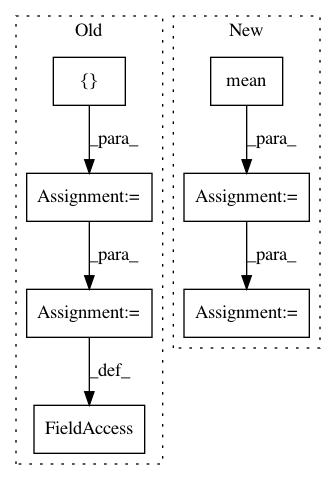

17aafdea24122bbb777f71a8ea7c2505e3fee84c,torch_geometric/nn/models/autoencoder.py,GAE,reconstruction_loss,#GAE#Any#Any#Any#,71
Before Change
y = torch.cat([pos_y, neg_y], dim=0)
pred = torch.cat([adj[row, col], adj[neg_adj_mask]], dim=0)
pos_weight = torch.tensor([neg_y.size(0) / pos_y.size(0)])
pos_weight = pos_weight.to(adj.device)
self.loss_op = torch.nn.BCEWithLogitsLoss(pos_weight=pos_weight)
return self.loss_op(pred, y)
After Change
def reconstruction_loss(self, adj, edge_index, neg_adj_mask):
row, col = edge_index
loss = -torch.log(torch.sigmoid(adj[row, col])).mean()
loss = loss - torch.log(1 - torch.sigmoid(adj[neg_adj_mask])).mean()
return loss
def eval(self, adj, edge_index, neg_edge_index):
pos_y = adj.new_ones(edge_index.size(1))
In pattern: SUPERPATTERN
Frequency: 3
Non-data size: 7
Instances
Project Name: rusty1s/pytorch_geometric
Commit Name: 17aafdea24122bbb777f71a8ea7c2505e3fee84c
Time: 2019-03-15
Author: matthias.fey@tu-dortmund.de
File Name: torch_geometric/nn/models/autoencoder.py
Class Name: GAE
Method Name: reconstruction_loss
Project Name: ecs-vlc/torchbearer
Commit Name: 0de148f6892361e61d4b68cf97814e73692f6b1a
Time: 2019-03-14
Author: mp2u16@ecs.soton.ac.uk
File Name: docs/_static/examples/gan.py
Class Name:
Method Name:
Project Name: PacktPublishing/Deep-Reinforcement-Learning-Hands-On
Commit Name: 58ff5635b2a268e6726081bc4d40923615652e27
Time: 2017-12-05
Author: max.lapan@gmail.com
File Name: ch09/04_pong_pg.py
Class Name:
Method Name: